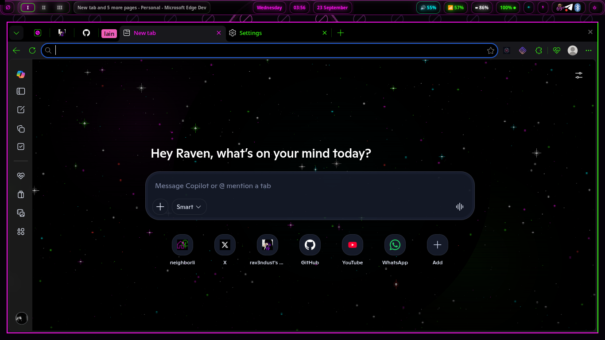

NAVI // CHROMIUM
On navi, the browser is not just an app. It is an application runtime, a policy surface, a visual layer, and eventually a platform we intend to shape ourselves. The web is navi's ideal app layer — portable, inspectable, offline-capable when we build it that way, and already understood by the tools people use every day.
The stack is already real: 72 shipped webapp launchers, a webapp CLI, managed policy, and optional browser installers. Ownership is the next step — and the point was never Chromium for its own sake. It's a stable web runtime navi can integrate deeply without taking choice away.
↓ take this page offline — the full report as a PDFSHIPPED · THE WEBAPP SYSTEM
A navi webapp is not a bookmark. It is an installed desktop entry with its own icon, its own window, and the same launcher visibility as a native application.
The public CLI is navi-webapp — install, uninstall, list, doctor. The wrapper translates a stable user-facing command into the catalog backend; doctor checks launchers, icons, caches, and common install mistakes.
Why app mode matters: the service gets an independent window in the compositor. Rofi launches it by name and icon, not by URL. Task switching treats it as an application surface. And the underlying engine still receives Chromium policy, extensions, and security updates.
First-party front doors: navi radio, neighborli, glyyph, and the naviApps storefront make the strategy visible — the distro's own services arrive as web technology without feeling bolted on. Users add more from the 72-launcher catalog. The default install is curated rather than exhaustive; the wider catalog stays available on demand. Telegram and Element have moved toward native-app paths, which shows navi treats the web layer as a strong default mechanism rather than a dogma.
navi's web stack includes pages that never need to become public internet services. A local page should work as a local page — including when Chromium is already running.
The failure that shaped the design: the naviApps storefront originally read its catalog with fetch(). Under file://, that required a file-access flag — and Chromium can ignore new command-line flags when an existing browser process handles the request. So the store could fail in the most ordinary case: the browser was already open.
The fix was architectural, not another launch flag. apps.json remains the source of truth, but build-catalog.sh emits an inlined catalog.js. The local page loads that data directly and no longer depends on file-origin fetch behavior.
Design rules that fell out of it:
--app and --force-dark-mode.apps.json and catalog.js.Deterministic dark mode: Chromium's system-theme detection can be unreliable on sway when the desktop portal isn't answering. navi puts a wrapper at /usr/local/bin/chromium that calls Debian's browser with --force-dark-mode, and a generated desktop override routes menu launches through that wrapper without modifying Debian's packaged file. User control remains: because navi's flag comes first, an explicit later --force-light-mode can override it. A curated default is not the same as a lock.
SHIPPED · POLICY MANAGEMENT
navi uses Chromium's managed policy layer to install a small, explicit set of browser components. The result is reproducible: a new profile still looks and behaves like navi.
The policy is stored as JSON under /etc/chromium/policies/managed/ and uses Chromium's ExtensionInstallForcelist. Force-installed items are installed silently and cannot be disabled or removed by the user while the policy remains in effect.
What this buys: coherence — theme and security defaults don't depend on profile sync. Privacy by default — blocking is present before anyone shops for an extension. Supportability — bug reports begin from a known baseline. Recovery — the baseline is reconstructed by redeployment, not by profile surgery.
What this obligates: keep the list small — a non-removable default carries more responsibility than a recommendation. Pin stable channels only; no beta surprises. State ownership honestly: uBOL is upstream's, blackice is a fork, Proton Pass is Proton's. Test browser coverage, because policy directories differ across Chromium-family packages. Coherence is useful only when the user can understand what's being enforced and why.
↑ back to topTHE BROWSER LINEUP
navi can be opinionated about the integration layer without pretending there is one correct browser for everyone.
scripts/installers/, deploy to /usr/share/navi/installers/, and are never run by the main installer. One optional browser failure must not endanger the operating-system install.Planned: a browser picker in navi settings. The picker would detect installed Chromium-family browsers, show the current webapp runtime, test app-mode support, and change one canonical setting. Webapps would resolve that setting instead of hardcoding chromium. The scope stays Chromium-based because app mode and managed-policy behavior are the contract navi can support consistently. Choice preserved, integration tested.
MICROSOFT EDGE ON NAVI

Why it's worth supporting: Edge exposes sleeping-tab controls that put inactive tabs to sleep, let users choose the inactivity interval, and allow exceptions. Microsoft describes the feature as a way to reduce memory and CPU use. That is not a benchmark claim for navi hardware — it is a product capability with obvious relevance to low-power systems and machines with limited memory.
Why it's not the default: navi's direction is zero telemetry. Edge's product and account stack makes it a tradeoff rather than a clean philosophical fit. The honest position is stronger: users who value Edge's workflow or efficiency controls should be able to choose it, while navi states clearly why it remains optional.
The integration bar: visual fit is necessary but not sufficient. A browser option also needs dependable Linux window behavior, working first-party controls, predictable updates, policy compatibility, and app-mode launches that survive real daily use.
↑ back to topUPSTREAM CITIZENSHIP
navi's first response to a browser bug should not always be a distro-only patch. When the failure belongs upstream, the useful work is evidence, a clear report, and verification when a fix lands.
| tracker id | observed behavior | state |
|---|---|---|
| EDGE-LINUX-001 | The Copilot toolbar button does not function on the tested Linux build. | Open; awaiting response |
| EDGE-LINUX-002 | Enabling "Use system title bar and borders" produces no change; Edge's custom chrome remains in place. | Open; awaiting response |
23 September 2026 — evidence sent upstream. Raven submitted both issues through Edge's built-in feedback system with a screenshot, a screen recording, and a detailed write-up, identifying himself as a navi maintainer who wants Edge to be a reliable distro option.
Now: a public record is maintained — docs/edge-linux-feedback.md keeps the issue IDs, exact behavior, submission history, and current status in one place. Both issues are also tracked with their status on our issues page, alongside every other bug we know about — ours and upstream's.
When fixed: verify on navi. The tracker calls for testing on eiri's Debian trixie base, against Edge Dev and Stable, on real navi hardware. A vendor response is not the same as a verified fix.
A distro maintainer lobbying Microsoft for better Linux support is unusual leverage. It should be spent deliberately: reproducible behavior, visual evidence, one public status page, no inflated claims. A private patch shifts maintenance onto navi and hides the Linux problem from everyone else; an upstream repair improves Edge for other distributions too. The same principle applies to Helium — dogfood is due diligence. Daily use is how update lag, policy gaps, regressions, and browser-specific assumptions become visible before accela inherits them.
↑ back to topDOGFOODING · PRIVACY LAYER
The transition is staged on purpose. navi should replace a proven blocker only when its own fork has earned the job. uBlock Origin Lite is still the force-installed policy blocker today; blackice is dogfooding now; only after testing does the policy ID change.
What blackice is: xvoidsx's GPLv3 fork of uBlock Origin Lite — a Manifest V3 ad and tracker blocker with a nightshadeNeon interface. The blocking engine, filter-list machinery, and Declarative Net Request conversion remain upstream work. Raymond Hill's copyright and the uBlock Origin contributors' notices stay intact; xvoidsx adds its copyright only to its own interface, branding, defaults, and genuine curated-list work.
Boundaries that protect credibility: never present blackice as an official uBlock project. Never dogfood it beside uBO or uBOL — overlapping blockers fight over the same requests. Never show fake statistics, controls, or placeholder lists. Keep the Chromium build as the supported target — no other target gets claimed until it’s packaged and tested. Change the navi policy only after the dogfood gate passes.
One brand, two engines: the extension is the portable phase — it can run in Chromium-family browsers now and build recognition around one privacy surface. The native accela phase is different work: an adblock-rust component sits closer to the browser and avoids making the extension the permanent architectural ceiling. The name and user experience stay continuous even as the engine changes.
↑ back to topDOGFOODING · ACCELA FOUNDATION
Forking raw ungoogled-chromium would maximize control on day one and maximize release-engineering burden at exactly the same time. Helium changes that equation: productized Linux packaging, update paths, services, and cross-platform work already exist in public repositories — and it's based on ungoogled-chromium rather than stock Google Chrome, with Helium-specific work published under GPL-3.0. accela can aim to remain a legible patch set instead of becoming an opaque Chromium tree.
What navi must watch: security-update lag — dogfood across several Chromium releases, not one good week. Divergence — record every "Helium chose X; accela would choose Y" decision. Ad blocking — Helium's baked-in uBlock component and blackice are the clearest known overlap. Linux integration — policy directories, app mode, theming, codecs, and window behavior need target-system tests.
The escape hatch is part of the design. If Helium's direction or cadence stops fitting, a clean accela patch stack should be portable back toward plain ungoogled-chromium. A base is useful when it reduces work without becoming a trap. Helium's own README describes it as beta — that makes Raven's daily-driver period a precondition, not a ceremonial trial: normal browsing, updates, extensions, app windows, and navi policy all need time to fail honestly.
↑ back to topTHE HORIZON · ACCELA PRODUCT LAYER
accela is where the browser becomes an owned interface to the wired: visual identity, privacy, search, agents, and the smallweb designed as one system.
!radio, !nl, !apps, !wired turn the address bar into a map of navi's own front doors."Wallpaper is the theme": Chromium's native color extraction can use a new-tab-page wallpaper to tint the wider browser chrome. In Raven's navi tests, pulsegrid, katakana rain, and jellyfish each produced coherent palettes without the muddy mappings seen with an external theme. That suggests a stronger accela model: the selected navi gifpaper becomes the browser's visual source of truth. Leading default: pulsegrid — the boldest statement of the navi visual language, static frame on older hardware, animation as an explicit option. Showcase alternative: jellyfish — a softer pink-purple-plum palette proving the same system can change mood without losing coherence.
The default new-tab shortcuts should point to navi's front doors — neighborli, navi radio, glyyph, naviApps, and the navi site — rather than one maintainer's personal history. Personalization begins from a useful public baseline.
↑ back to topROADMAP AND GUARDRAILS
The sequence matters. navi can deepen Chromium integration now while keeping accela on the horizon rather than turning it into the next-release bottleneck.
Non-negotiable principles: additive, not purist — a strong default doesn't require purging alternatives. Choice preserved — users choose the browser while navi owns the compatibility contract. Zero telemetry — xvoidsx-owned layers collect nothing by default. Open models, open web — agent features should widen the web rather than trap it inside one provider.
Scope boundaries: Safari is explicitly out of scope. Edge remains optional even if its Linux bugs are fixed. Helium remains a candidate base until dogfood evidence is strong enough. accela should not claim integrations before they exist.
Choice does not come from refusing to make decisions. It comes from making the integration legible, keeping alternatives available, and separating what ships from what is merely planned.
↑ back to topCLOSING / REFERENCE
navi treats that role as infrastructure worth understanding and, piece by piece, worth owning. Today's stack is deliberately practical: Debian Chromium, app-mode windows, local pages, Rofi launchers, managed extensions, and optional alternatives. Tomorrow's stack is more ambitious: a user-selectable Chromium runtime, blackice as an owned privacy layer, and accela as the browser where navi's visual, smallweb, search, casting, and agent ideas meet.
The continuity matters more than the brand name. navi is not waiting for accela to begin integrating the browser well, and it is not using today's Chromium dependence as an excuse to avoid owning tomorrow's design.
wired/scripts/naviwebapp.sh — public webapp CLIwired/naviApps/ — catalog, launchers, icons, local storewired/chromium/ — policy and dark-mode wrapperscripts/installers/ — optional browser installersdocs/edge-linux-feedback.md — public Edge issue trackergithub.com/xvoidsx/navi · github.com/xvoidsx/blackice · the full report as a PDF
Sources
Status note: "shipped", "dogfooding", and "planned" describe project state as of 23 September 2026. Planned items are not presented as shipped features. — open models, open web